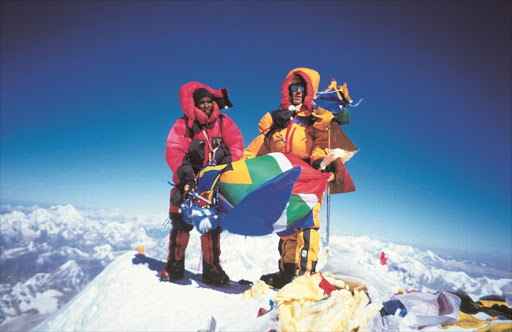

Altitude: 29,029 ft. By the time that many people got here they were either running low on oxygen or in one person's case they were already out. This caused for clouded thinking and impaired judgment. Many of the people that had reached her were also extremely tired by the time they got here. This lead to many people having troubles on the way back down to camp four and in some cases that took their lives.